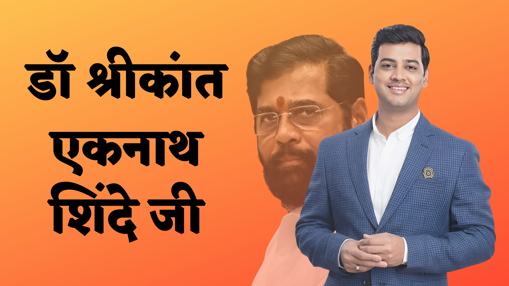

Shrikant Eknath Shinde ji is a member of the 17th Lok Sabah of India. He represents the Kalyan constituency of Maharashtra and is a member of the Shiv Sena political party. He is the son of Eknath Shinde ji the Cabinet Minister of Public Works (MSRDC, Public Undertaking) in the Government of Maharashtra. At the time of his 2014 election win, he was a final-year Master's student of orthopedics.
Shrikant Shinde ji was born on 4 February 1987 in Mumbai, Maharashtra, India. She belongs to a Hindu family. Shrikant Shindes fathers name is Eknath Shinde ji. Let us tell you that Shrikant ji is the CM of Maharashtra state. Apart from this, his mothers name is Lata Shinde (Shrikant Shinde Mothers Name). Lata is a business woman by profession. Srikanth also had a brother and a sister named Dipesh Shinde and Shubhada Shinde. Please tell that Srikanths brother and sister died on June 2, 2000, after their boat capsized in the lake with this Srikanth is a married person. Shrikant Shindes wifes name is Vrushali Shinde. Vrushali and Srikanth also have a younger son named Rudransh Shinde. Dr. Shrikant Shinde ji is a livewire Medico (MBBS, M.S. Orthopedics). He completed his M.S. from Dr. D.Y. Patil Medical College, Navi Mumbai. Shindes family members include Father Shri. Eknath Shinde ji, Mother Smt. Lata Eknath Shinde, wife Vrushali Shrikant Shinde and his son Rudransh. Shinde got elected as a Member of Parliament in 2014 just two months before the final exam of M.S. He is a very enthusiastic person who likes making positive changes to influence the common man. He looks after Kalyan Constituency and ensures making good decisions for the youth and all its citizens. He has been the MP of the densely populated constituency since May 2014. He won the election a second time in May 2019.
Shrikant Eknath Shinde, also known as Dr. Shrikant Shinde, is a prominent political figure associated with the Shiv Sena party in Maharashtra, India. Here is an overview of his political career: Early Political Engagement: Shrikant Shinde joined the Shiv Sena party and became an active member early in his political career. He participated in party activities and worked on strengthening the partys organization at the grassroots level. Roles within the Party: Shrikant Shinde has held various leadership positions within the Shiv Sena. He has been involved in party affairs and has contributed to the partys growth and development. Political Office: Shrikant Shinde has served as a Member of the Maharashtra Legislative Assembly (MLA) from the Kalyan Rural constituency. As an MLA, he has represented the interests of his constituents and worked on addressing their concerns. Ministerial Positions: Shrikant Shinde has held important ministerial portfolios in the Maharashtra state government. He has been a Cabinet Minister, handling significant responsibilities related to governance and administration.